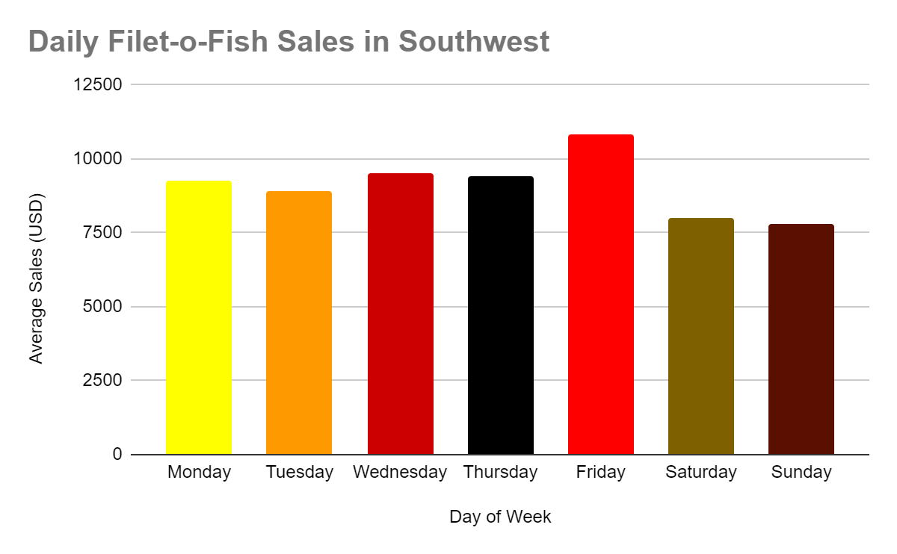

|
Exhibit 99 |
| CEO Release |
| FOR IMMEDIATE RELEASE | FOR MORE INFORMATION CONTACT: |
| 10/18/2019 | Data Scientists: Hasan Liou, hhliou@ucsd.edu |
THE IMPOSSIBLE BURGER POSES A THREAT TO McDONALD'S GROWTH
Access the PDF Here- The Company saw a 40% growth in profits over two years, prior to the release of the Impossible Burger
- Profits have since stagnated, and the Company may now be facing a competitor
- Data shows that promotional campaign similar to the Fish-o-Filet Fridays may rejuvenate sales
LA JOLLA, CA - As a Data Scientist of McDonalds, I can confirm that the release of the Impossible Burger has negatively affected our sales, as we have seen a consistent stagnation of our Hamburger, Chicken Fillet, and Fish Fillet sandwich sales since October.
Here are our sales prior to and following the release of the Impossible Burger:
 |
|
As you can see, the sales have been seeing a steady growth over a span of almost three years. However, following the release of the Impossible Burger, the sales have been flatlining. It may be difficult to accept, but we need a new advertising campaign to return us to our previous state.
Solutions
So what can we do to bring the McDonald’s corporation back on top? After some analysis on the daily sales dataset, it seems we’ve found a certain trend with the Filet-o-Fish sandwiches. In particular, we have a tradition of selling the Filet-o-Fish sandwiches for a reduced price on certain Fridays; as such, we’ve experienced increased sales during those periods in all the regions except the Northeast (see below).
|  |
 |
This trend is exclusive to the Filet-o-Fish; neither the Hamburger nor the Chicken Filet sandwich are associated with this day-to-day phenomenon. I am willing to bet that, if we were to give some of our other products a chance at the special discount spotlight, we’d see increased sales overall. Of course, the Filet-o-Fish special is seasonal, so I would advise having the same approach to make the offer seem more special. It would even provide us with some more attention and publicity if anything. Although Burger King’s product has had a significant impact on our overall sales, I am confident that my plan will push us back up into the spotlight.
Mcdonald's Corporation 2019 Report